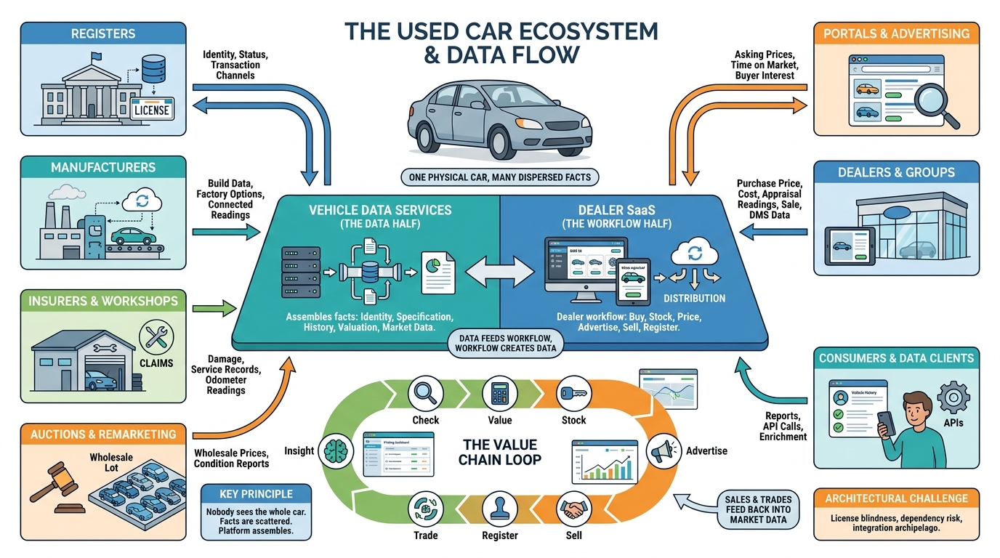

Part I — MARKET: The Business of Vehicle Data and Dealer Software
Who Knows What About a Car: The Vehicle Data and Dealer Software Ecosystem

Image generated by Google Gemini (gemini-3-pro-image-preview)
Part I — MARKET: The Business of Vehicle Data and Dealer Software

Image generated by Google Gemini (gemini-3-pro-image-preview)